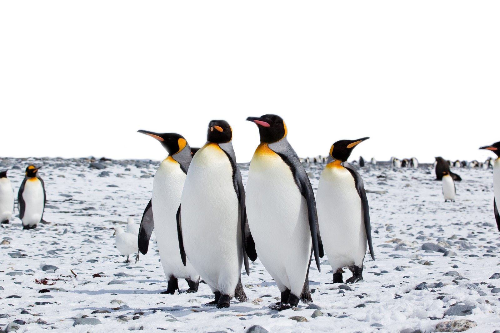
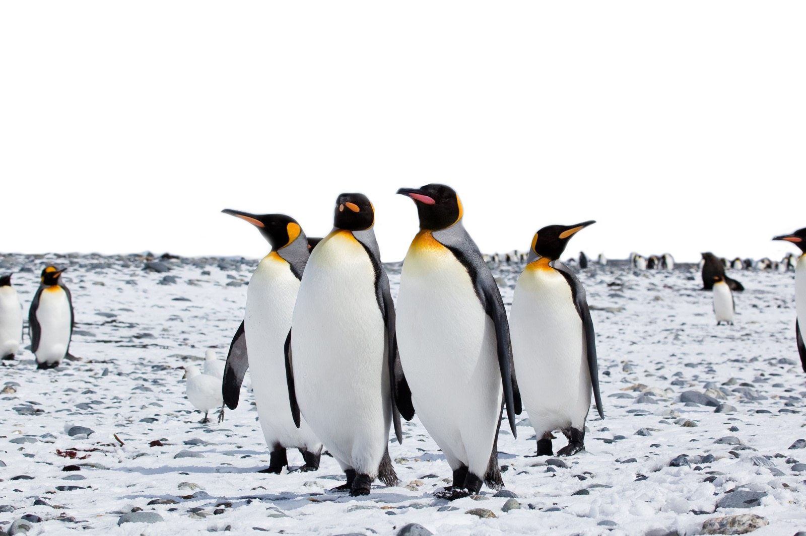

Penguins! [Wikipedia]
Penguins are a group of aquatic flightless birds from the family Spheniscidae. They live almost exclusively in the Southern Hemisphere, in other words, the Antarctic! They have a cute appearance, sporting their signature black-and-white plumage and flippers. They feed on krill, fish, squid, and other sea life - hunting in the sea and spending the rest of their time on land. Standing 1.1 meters tall and weighing 35 kilos on average, penguins sure look cute!